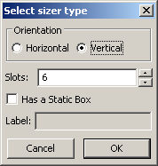
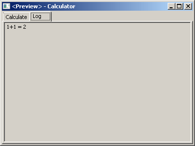
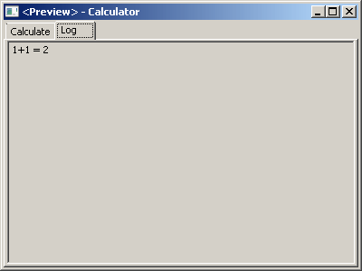
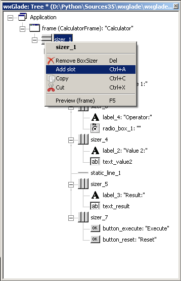
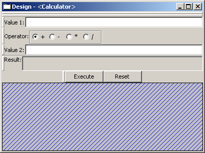
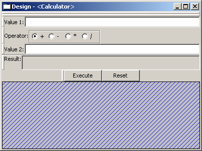
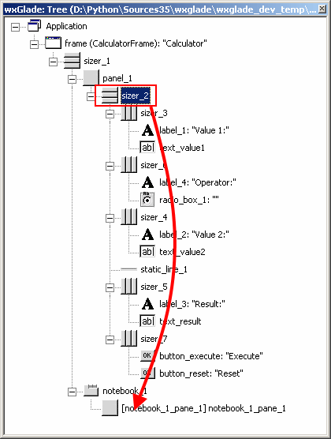
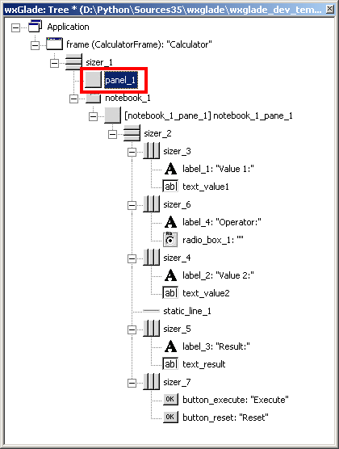

Tutorial Project: Calculator¶
Part 1: Create Calculator window and the first widget¶
In this section we will go through the steps to create the simple calculator window from above. In later sections we will modify it to highlight certain features like other sizer types, menus and status bars.
For the basic structure:
- Select “File->New” to create a new file and “File->Save” to save a .wxg file to a directory.
- Add the frame:
- click on the Frame icon
 on the “Windows” line of the Palette window
on the “Windows” line of the Palette window - for the class Name, enter “CalculatorFrame”:

- click on the Frame icon
- A frame with a sizer
 and one slot is now visible in the Tree and Design window
(there the slot is visualized by a hatched area)
and one slot is now visible in the Tree and Design window
(there the slot is visualized by a hatched area) - It would be possible to place controls directly on the frame, but usually a panel is added first, as a frame is really just a frame around the other things.
To add the panel:- in the Palette window (again on the “Windows” line) click on the panel icon to start the placement
- in the Tree or Design window, click in the slot to place the panel there
- On the panel we need a vertical sizer with six slots:
- in the Palette window on the “Sizer” line click on the sizer icon to start the placement
- in the Tree or Design window, click on the panel to place the sizer there
- a dialog will open
- set “Orientation” to “Vertical” and the number of slots to “6” 
- in the Palette window on the “Sizer” line click on the sizer icon
- Now add a horizontal box sizer to the first slot: do as before, but keep “Orientation” as “Horizontal” and set the number of slots to “2”
- Place a static text
 as label (found on the “Static” line of Palette) in the top left slot and a text control
as label (found on the “Static” line of Palette) in the top left slot and a text control  (found on the “Inputs” line) in the right
(found on the “Inputs” line) in the right
Your design should now look like this:

|
The label does not yet display anything useful and the window title is not meaningful.
Also, layout and alignment need to be changed, but we’ll change this later on.
So, some properties of the label and the text need to be modified:
- Select the label in the Tree or Design window.
- If not yet visible, open the Properties window.
- In the Properties window:
- Edit the label to display “Value 1:” by entering this on the editor tab “Widget”.
(You could also edit the label directly in the Tree window by clicking into the label and/or pressingF2.)
- Edit the label to display “Value 1:” by entering this on the editor tab “Widget”.
- Select the frame in the Tree window and go to Properties -> Widget -> Title and change it from
frametoCalculator. - You may want to define a default size for the frame:
Go to Properties -> Common -> Size and set it to400,300.
Without this, the frame will be created with the minimum possible size to fit all controls.
This file can be found in the folder wxglade/examples/Calculator:
Calculator-01.wxg
Part 2: Add the remaining rows and widgets¶
We need almost the same combination of sizer+label+text for the second value and the result, so we’ll copy the horizontal sizer including it’s content from the first to the third and fifth slot of the vertical sizer.
Having done so, we will modify the label fields of the newly copied wxStaticText widgets to Value 2 and Result (consistent with the layout for the calculator presented on the wx Basics page).
After that, we’ll add the “Operator” radio box and the buttons.
There are several methods to copy:¶
- Copy & Paste in Design Window:
- select the “handle” of the sizer, which is shown in red here:
- then hit
Ctrl-Cto copy the selected sizer (or use the context menu)- select the third, empty slot, where you want to place a copy; it will be hatched in blue
- then hit
Ctrl-V(or use the context menu)- select the fith, empty slot
- then hit
Ctrl-V(or use the context menu)

- Copy & Paste in Tree Window:
- select the sizer node
- then hit
Ctrl-Cto copy the selected sizer (or use the context menu)- select the third, empty slot, where you want to place a copy
- then hit
Ctrl-V(or use the context menu)- select the fith, empty slot
- then hit
Ctrl-V(or use the context menu)
You may of course copy in the Design window and paste in the Tree or vice versa.
- Drag & Drop in Design Window:
- drag the sizer handle to the empty slot while holding the
Ctrlkey
- Drag & Drop in Tree Window:
- drag the sizer node / icon in the Tree window to the empty slot, holding the
Ctrlkey
If you don’t hold the Ctrl key, the item will not be copied, but moved.
You may drag items between different windows, e.g. from Design to Tree or to another running wxGlade instance.
Further Editing¶
The wxTextCtrl adjacent to the “Result” wxStaticText should display multiple lines of text and should not be editable. To modify accordingly, just follow these steps:
- Select the text control
txt_ctrl_3
(depending on the exact steps of editing, the name might be slightly different)- Go to Properties -> Widget
- Enable Style ->
wxTE_MULTILINEandwxTE_READONLY- Go to Properties -> Common
- Click the “…” button right to
Backgroundand select grey color or
just enter#d4d0c8into the text control.
The last step is to have a grey background. For single line readonly text controls, this is done automatically by wx, but not with multiple lines.
In the next steps fill the remaining slots of the main sizer:
- insert a two-slot horizontal sizer with a label and a radio box into SLOT 2

- place a horizontal line into SLOT 4

- insert a two-slot horizontal sizer with two buttons into SLOT 6

- For the first button, select the checkbox Properties -> Widget -> Default.
This will make this button the default one, i.e. when the user hits Enter it will have the same effect as pressing this default button.
Note
- when you want to place multiple elements of the same type,
just hold the
Ctrlkey when placing an element to stay in placement mode (on Mac OS use theShiftkey). - When you have placed an element in the wrong slot,
just drag it to the right slot or delete it with the
Delkey or the context menu.
Define the options “+-*/” for the radio box by going to the “Widget” tab:
|
 |
Change labels and names:¶
After copying, the controls will have default values and names. Usually you have to change them.
You can do this in the Properties window or directly in the Tree window.
To edit in the Tree window, you can select and then click on the label or press F2.
This needs to be done now:
- Set the names of the text controls to
text_value1,text_value2andtext_result. - Set the name of the radio box to
radiobox_operator - Set the labels to
Value 1:,Operator:,Value 2:andResult: - Set the name of the first button to
button_executeand the label toExecute. - Set the name of the second button to
button_resetand the label toReset.
For our example project where multiple labels and names have to be modified, it’s much faster to do so in the Tree window.
Example for editing in the Tree window:
- The name is
button_1and the label isbutton_1 - The displayed text in the Tree window is
button_1: "button_1"

- Change to
button_execute: "Execute"

The Tree structure of your design should now look like this:

|
The file can be found in the folder wxglade/examples/Calculator:
Calculator-02.wxg
Final Steps: Layout¶
Your design should now look like this:

|
So all elements are there, but the layout is not yet what we want to have:
- We want the rows with the values, operators and buttons not to grow vertically:
- select one of the horizontal sizers (e.g.
sizer_3aroundValue 1) - set Properties -> Layout -> Proportion to
0 - select the next of the sizers (e.g. around
Operator) - either set Properties -> Layout -> Proportion to
0or just hitCtrl-Yto apply the last change to the selected sizer - do the same for the remaining sizers (e.g. around
Value 2and the buttons)
- select one of the horizontal sizers (e.g.
- We want the text controls to grow horizontally to fill the available space:
- select one of the text controls (e.g. text_value1)
- set Properties -> Layout -> Proportion to
1 - do the same for the other controls, either by modifying the Proportion properties
or by hitting
Ctrl-Yto apply the last change to the selected control
- The labels
Value 1,OperatorandValue 2should better align vertically with their text controls:- select label
- set the checkbox Properties -> Layout -> Alignment ->
wxALIGN_CENTER_VERTICAL - do the same for the other two labels
- We want the Result text control to fill the available vertical space:
- select text control
- set the checkbox Properties -> Layout -> Alignment ->
wxEXPAND
- We want the buttons at the bottom to be centered; so the layout of the sizer around them needs to be set:
- go to Properties -> Layout
- de-select the checkbox Alignment ->``wxEXPAND``
- select the checkbox Alignment ->
wxALIGN_CENTER_HORIZONTAL
- We want a small border above and beyond the horizontal line and around each of the buttons:
- select the horizontal line
- set Properties -> Layout -> Border to
5 - uncheck Properties -> Layout -> Border
wxLEFTandwxRIGHT - select the first button
- set Properties -> Layout -> Border to
5 - do the same with the second button
At this point, it’s time for a preview:
Select “Preview” from the context menu or the main menu or from the Properties window when the frame is selected.
Alternatively, press F5

|
This file can be found in the folder wxglade/examples/Calculator:
Calculator-03.wxg.
If you are curious how a design turns into Python source code, you may have a look at the section Create and Use Source Code before going through the next sections.
Actually, “Preview” internally creates and executes Python source code.
Excursion: Layout properties: Proportion and Alignment->wxEXPAND:¶
The “Proportion” of 1 makes the element grow with a proportional factor of 1 when the horizontal sizer is growing. Please note that this growth happens only in the “main” direction of the sizer; the sizer is horizontal, so this change makes the text control grow in width.
For a growth in the other direction, wxEXPAND in the “Alignment” box would need to be activated.
You may try this to see the difference:
| Horizontal Sizer: Proportion 0 Text Ctrl: Proportion 0 The first row occupies the minimum height as defined by the label and the text control. The text control occupies its minimum width, as defined. |
 |
| Horizontal Sizer: Proportion 1 Text Ctrl: Proportion 0 The first row consists of the horizontal sizer. It grew vertically, as it is placed in a vertical sizer. |
 |
| Horizontal Sizer: Proportion 1 Text Ctrl: Proportion 1 The text control grew in width, as it is in a horizontal sizer. |
 |
| Horizontal Sizer: Proportion 1 Text Ctrl: Proportion 1, EXPAND The text control expanded vertically, i.e. perpendicular to the main direction of the surrounding horizontal sizer. |
 |
Part 3: Add a Notebook¶
For many applications it’s desirable to place the GUI elements on a notebook control. For our calculator e.g. we may want to have the controls on the first page and a log on the second page:
 


|
A notebook can only be added to an empty sizer slot. In our case, we want to keep the existing controls. So we add a slot to the toplevel sizer, create the notebook there and then move the controls to the first notebook page. After that we delete the empty slot.
Create a slot for the notebook:
- Go to the toplevel sizer and select “Add Slot”:

-> the slot will be at the bottom:
 
 |
Add a notebook:
- click on the Notebook icon
 in the section “Containers” to start placing a notebook
in the section “Containers” to start placing a notebook - click on the hatched area in the Design window or on the sizer slot in the Tree window
- in the dialog, select wx.NB_TOP to place the notebook tabs at the top
The newly created notebook will have one page already, which consists of just a panel. It will have a default name like “notebook_1_pane_1”.
Fill the first page:
Move the existing controls to the first notebook page:
|
 |
|
 |
The Design window should look like this, i.e. it has a notebook, but with only a single page: |
 |
Define the other notebook page and the tab labels:
|
 |
Fill the second page:
You should know how to do this by now:
- add a sizer to the notebook pane (with a single slot)
- add a text control to the sizer slot
- set the layout: Proportion 1 and
wxEXPANDsuch that the text control will fill the whole page - set the widget style to wxTE_MULTILINE and wxTE_READONLY
- set the widget background color to
#d4d0c8
This file can be found in the folder wxglade/examples/Calculator:
Calculator-04-Notebook.wxg
Part 4: Use of Spacers¶
Sometimes you need to keep some space in a sizer, either with a fixed size or growable, e.g. to have a gap between two controls or to align two controls to the left and the right edge of a window or to align a control to the center.
To add a spacer, click the spacer icon  and place it in a sizer slot.
and place it in a sizer slot.
In our example, we may place a spacer to the left and right of the operator radio box to center it:
|
 |
|
 |
In the Tree view you can see the structure: |
 |
In the Properties window you can see the settings to make the spacers grow: |
 |
| As the spacers have a height of 0, you will not see them in the design window. If you don’t like this, you may actually set the Height property to a different value and maybe even set “EXPAND”. For the actual window this will not make a difference, as the spacers are invisible, but the spacers will be visible in the design window: |
 |
This file can be found in the folder wxglade/examples/Calculator:
Calculator-05-Spacers.wxg
Part 5: Use of Grid Sizers¶
The current version doesn’t look perfect as the controls are not vertically aligned. To change this, the labels can be modified to have the same fixed size. This may cause problems when running on a different platform with a different font size. Instead, we will now move the controls into a grid sizer.
There are three grid sizers which are supported by wxGlade:
- GridSizer: all columns have the same width, all rows have the same height
- FlexGridSizer: all rows and columns may have different sizes.
Any row(s) and/or column(s) can be defined to be ‘growable’ - GridBagSizer: a grid that allows items to span multiple rows or columns.
The editing logic is a bit different from the other sizers.
For our calculator we need the FlexGridSizer as the first column is fixed and the second column should grow. The result will look like this:
  |
To get there:
- Add a slot to the vertical sizer
- Add a grid sizer to this slot:

- In the grid sizer dialog, select
FlexGrid, 4 rows and 2 cols:

- Move the labels and controls to the slots of the newly created sizer
- Delete the old sizer
- In Properties “Grid”: make column 2 and row 4 growable:

- To make the text controls
text_value1andtext_value2actually fill the growable column:
activate Properties -> Layout -> AlignmentwxEXPANDfor both of them
The logic with wxEXPAND is a bit different than with non-grid sizers.
If it is active, the control will grow horizontally and vertically.
If you want to avoid this, you need to add a horizontal or vertical sizer ‘between’ grid sizer and control.
This file can be found in the folder wxglade/examples/Calculator:
Calculator-06-GridSizer.wxg
Next steps:¶
- create source code and add event handlers - see Create and Use Source Code
- add a menu - see Menu, Status Bar, Tool Bar

{kind=link}
{kind=link}
{kind=link}
{kind=link}
{kind=link}
{kind=link}